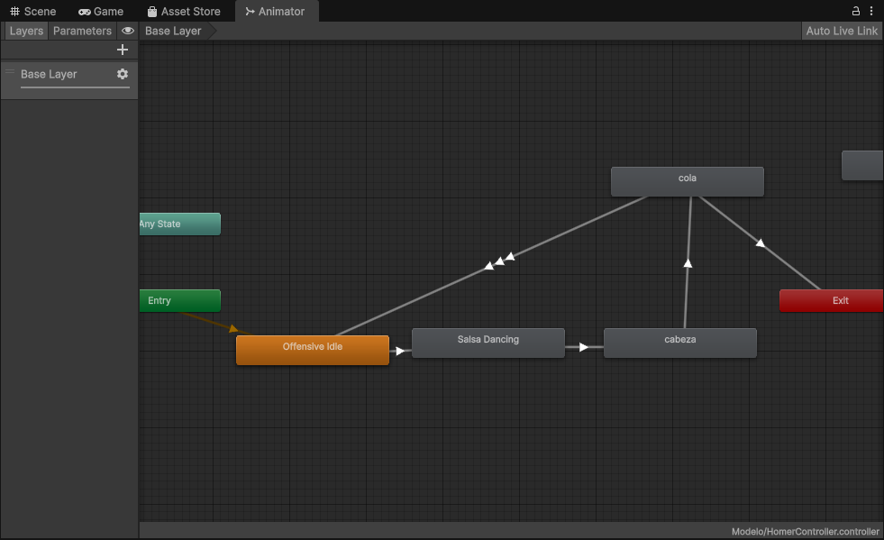

Universidad Mayor de San Andrés
Facultad de Ciencias Puras y Naturales
Carrera de Informática
Multimedia
Proyecto Multimedia Individual
Desarrollador
Erick Fernando Poma Condori
Gestión 1/2026
Clasificación de Texturas
Esta aplicación procesa una imagen píxel por píxel para segmentar superficies como césped, tierra, cemento o agua. El algoritmo se basa en el principio de Distancia Mínima de Manhattan, calculando la distancia del color de cada píxel hacia los centroides predefinidos y clasificándolo en la categoría más cercana.
// Algoritmo de Distancia Mínima hacia Centroides (Manhattan)
int dCesped = Math.Abs(p.R - centroidCesped.R) + Math.Abs(p.G - centroidCesped.G) + Math.Abs(p.B - centroidCesped.B);
int dTierra = Math.Abs(p.R - centroidTierra.R) + Math.Abs(p.G - centroidTierra.G) + Math.Abs(p.B - centroidTierra.B);
int dCemento = Math.Abs(p.R - centroidCemento.R) + Math.Abs(p.G - centroidCemento.G) + Math.Abs(p.B - centroidCemento.B);
int dAgua = Math.Abs(p.R - centroidAgua.R) + Math.Abs(p.G - centroidAgua.G) + Math.Abs(p.B - centroidAgua.B);
// Encontramos la menor distancia
int minD = Math.Min(Math.Min(dCesped, dTierra), Math.Min(dCemento, dAgua)); Clic para ampliar
Clic para ampliar
Filtro de Suavizado 3x3
Técnica de convolución espacial diseñada para reducir el ruido y suavizar bordes bruscos. Funciona recorriendo la imagen original utilizando una ventana de 3×3 píxeles. Para cada píxel, calcula el color promedio tomando en cuenta sus 8 vecinos adyacentes y a sí mismo.
// Recorrer la ventana de 3x3 centrada en (x, y)
for (int dx = -1; dx <= 1; dx++) {
for (int dy = -1; dy <= 1; dy++) {
Color c = bmpOriginal.GetPixel(x + dx, y + dy);
sumaR += c.R; sumaG += c.G; sumaB += c.B;
}
}
// Promediamos entre los 9 píxeles vecinos
bmpResult.SetPixel(x, y, Color.FromArgb(sumaR / 9, sumaG / 9, sumaB / 9)); Clic para ampliar
Clic para ampliar
Producción Multimedia: "La Vaca Lola"
Este proyecto integra un escenario 3D interactivo desarrollado en Unity. Abarca todo el ciclo de producción multimedia: generación de audio mediante Inteligencia Artificial, riggueo de personajes, sincronización en línea de tiempo (Timeline) y exportación a WebGL.
Proceso de Desarrollo (Making-Of)

1. Generación de Canción (Web)
Uso de una interfaz web conectada a Colab para establecer los parámetros base de la canción infantil.

2. Audio IA (Google Colab)
Ejecución de modelos de inteligencia artificial en la nube para sintetizar la voz y la pista musical.

3. Rigging en Mixamo
Proceso de asignar un esqueleto (rig) al modelo 3D para permitirle realizar animaciones fluidas.

4. Ensamblaje en Unity
Integración de los modelos, texturas y materiales dentro del motor gráfico Unity.

5. Sincronización (Timeline)
Uso de Unity Timeline para coreografiar la animación del modelo 3D al ritmo preciso del audio generado.